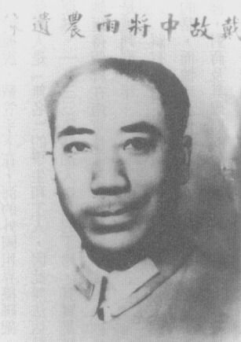
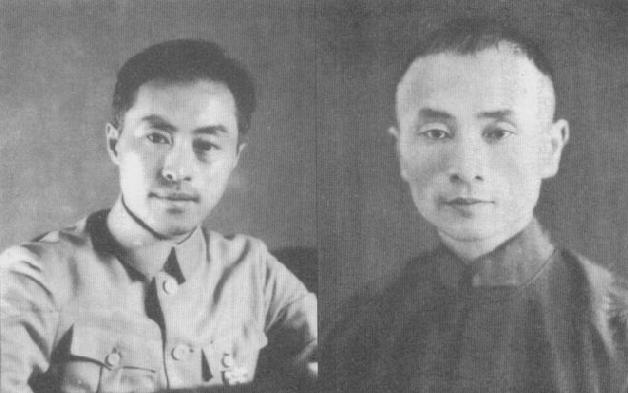
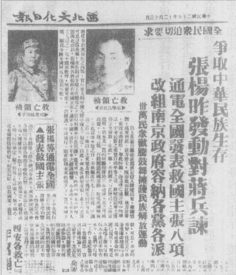
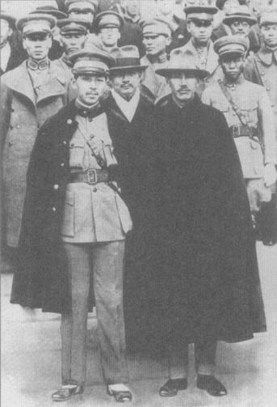

|
前一页 后一页 回目录 回主页 |
第三章：南京年代 和上次1927年下野一样，蒋介石在1931至1932年的冬天于溪口赋闲，不久就接到黄埔系将领函电交驰，他们宣称仅肯接受蒋的命令，又说自从他下野，就再没收到支付部队粮饷的资金。政府主要岁入来源是关税收入，东北一失，其关税流失占了全国海关总税收的15％①。各省扣住盐税不肯上缴现由孙中山之子孙科领导的中央政府②。现在工商组织、民间团体、甚至一些学生社团疾呼总司令回任。蒋亦获悉，莫斯科继释放蒋经国之计，又向南京提议恢复外交关系。蒋可以肯定斯大林想增强国民党内反日派的声势，但又不确定蒋的真正立场③。 ① Maius B.Jansen, Japan and Chian: From War to Peace, 1894-1972 (Chicago: Rand McNally, 1975), p.384; Parks M.Coble（柯博文）, The Shanghai Capitalists and the Nationalist Government, 1927-1937 (Cambridge: Harvard University Press, 1986), pp.88-96. ② Coble（柯博文），Shanghai Capitalists, pp.88-96. ③ Robert C.North, Moscow and the Chinese Communists, 2d ed. (Stanford, Calif.: Stanford University Press, 1936), p.161; O.Edmund Clubb（柯乐博），China and Russia (New York: Columbia University Press, 1971), p.269. 1932年1月蒋在溪口武岭学校的一篇演讲，经上海等地报纸刊载。他重申政府“坚持不屈服，不订损失国权之约”。但是，他也警告，鉴于当前国家实力和精神，不宜轻举妄动，否则“战败之国未有不失地，未有不丧权者”，结果势必“斫丧……中华民族之命脉”①。他的话引起当家同志的共鸣。南京政府当权派只有少数人喜欢蒋，广州政府更是没一个人喜欢他，即便不情愿，他们仍接受他是危机时刻不可或缺的角色；1个月之内，他们投降了。1932年1月，蒋和汪精卫在杭州会面，协议由汪精卫取代孙科出任政府首脑，蒋回任军事总司令②。 ① 《申报》（上海），1932年1月15日；蒋1932年1月11日的演讲收在秦孝仪《大事长编》卷二，p.421。 ② Chen Lifu（陈立夫），The Storm Clouds Clear over China (Stanford, Calif.: Hoover Institution Press, 1994), pp.111-112. 此时，和日本的危机已转移到上海，每天都有暴力的反日事件发生①。1月底，日本一支陆战队以保护侨民的名义在上海登陆。当蔡廷锴的第十九路军向日军开火时，日本出动飞机轰炸上海，杀死许多平民。蒋亲自负责全面调度指挥军事行动，致电前线士卒誓死御敌②。同时，他下令在河南省洛阳设立临时首都，以示政府持久抗战的决心。日本急派更多部队和军舰，使得全市日军高达5万人③。杜月笙也派出青帮狙击手在敌后攻击日本人，做为回应④。 ① 美国驻南京总领事馆佩克（Peck）电函美国驻北平使馆。January 24, 1932, FRUS(1932), vol.3: The Far East, p.79. ② 《一二八抗战期间国民党内的和与战之争》，《民国档案》1，no,27 (1992)：111。电报目前收藏在南京中国二历史档案馆。 ③ Keiji Furuya（古屋奎二），Chiang Kai-shek: His Life and Times (New York: St. John's University, 1981), pp.351-355. ④ Parks M.Coble（柯博文），"CKS and the Anti-Japanese Movement in China: Zou Taofen and the National Salvation Association, 1931-1937," Journal of Asian Studies 44, no.2 (February 1985): 296. 根据蒋的说法，他警告蔡廷锴，敌军可能从长江南岸的浏河国军防线后方登陆。蔡未能派出部队守住此一地区。3月1日，1万名日军乘船溯长江抵达浏河。打从战事开始至今，中方部队已有4千人阵亡、7700人负伤，被迫狼狈地集体退出上海①。中国报纸、学生团体、宗亲会、寺庙和商业团体，无不主张全面抗日，但蒋批准局部停火，在城的四周划出中立区，国军不准进入。这个协定，和其政府与日本的一切协定相同，不由汪精卫或他本人签署；因此在他们眼里，协定是非官方的文件。3月，蒋复任军事委员会委员长兼参谋总长②。 ① Furuya（古屋奎二），Chiang Kai-shek, pp.356-357. ② Boorman, Biographical Dictionary, vol.3, p.150. 由于日本攻击上海中国管辖区使得政府不遑兼顾，中共分散各地的苏区再度乘机快速发展。毛泽东在江西的苏区规模最大，涵盖30个县、300万人口；其次是张国焘的鄂豫皖边区。国军针对鄂豫皖边区发动两次围剿都以惨败告终，在淞沪战事冷却下来之后，蒋于1932年4月集结约40万部队再次进剿，这次包围着敌人兴建同心圆的碉堡。张国焘发觉自己寡不敌众，且即将被彻底包围，遂率领鄂豫皖边区大部分部队成功突围，往西边窜入四川，长途流浪历时4年，实比毛泽东的“长征”更加了不起①。 ① Edward L.Dreyer, China at War (New York: Longman, 1995), pp.186-187. 1932年6月，蒋在一项军事会议上讲话，宣称中共的根基就是国民政府机器的无能和贪腐，如果这次剿匪不能取得决定性的胜利，将有大麻烦，因为政府不能既长期抗日、后方又遭人攻击①。但是1932年和1933年初针对江西共军的剿匪之役又失败，且损失惨重，数以千计的武器被共军抢走。1933年5月，蒋指挥第五次剿匪战役，采用对付鄂豫皖边区的战术，集中力量兴建碉堡网，逐步围拢②。这次他召集了80万大军，大部分投入在扩建、补给和维护碉堡网，它们则受到机关枪交织火网的保护。双方损失皆以千计，但是到了1934年，作战区盖了14000座碉堡、1500英里的新道路，提供对共军地盘的有效封锁③。 ① 蒋1932年7月2日的《清剿共匪与整饬部队之要道》演讲稿，收在秦孝仪，《大事长编》卷二，p.465。 ② F.F.Liu（刘馥），A Military History of Modern China, 1924-1949 (Princeton, N.J.: Princeton University Press, 1956), p.102. ③ Jonathan D.Spence（史景迁），The Search for Mordern China (New York: W.W.Norton, 1990), p.400. 同时，对日停火只适用于上海地区；1933年元旦日军从东北出发，进占位在黄海边、长城最东端、扼东北进出门户的山海关。守山海关的东北军断断续续地抵抗，但他们不是日军的对手。1月间在军事会议上，蒋说明他何以未能投入中央军抗日时，喊出“攘外必先安内”的口号①。未来4年，他一再以此为号召。 ① Chiang Diaries, Hoover, June 1, 1933, box 36, folder 13. 日军继续南进，威胁到北平、天津。在汪精卫的支持下，蒋很难堪地同意华北局部停火（俗称“塘沽协定”），宣布河北省北部为非军事区，就等于又把中国一大块领土让给日本实质（但非法理）的管控①。蒋对一群军官解释，停火目的是“为缓和侵略”，争取时间以“保存华北，稍纡喘息”②。他又说：“若是能抵抗三年、五年，我预料国际上总有新的发展，敌人自己国内也一定有新的变化”，可以缓解情势，给我们机会得到“死中求生的一线希望”③。同时，他禁止在沿海地区兴建新工厂，下令规划把重工业移到内陆省分④。 ① 秦孝仪，《大事长编》卷二，pp.515-553、583、585。 ② Chiang Diaries, Hoover, June 1, 1933, box 36, folder 18. ③ 蒋1932年4月12日演讲，收在秦孝仪，《大事长编》卷二，p.552。 ④ 四届四中全会附录，秦孝仪，《大事长编》卷三，p.652。 1934年3月，蒋对一群资深政治领导人说，“总共还不到1100天”就会开始对日抗战——这个估计只比实际爆发抗战，多了43天！①他估计抗战要打十年，也算得上是准确。他说，这段期间，列强最后会介入，一场世界大战将开打；最后，日本国内将爆发革命②。 ① 蒋1934年3月18日演讲，收在秦孝仪，《大事长编》卷二，p.670。 ② Chiang Diaries, Hoover, August 21, 1935, box 38, folder 4. 日军占领热河，张学良辞去一切职务，进入上海一家教会医院勒戒鸦片烟癮，用俗称的“冷火鸡法”成功戒毒。等到出院后，他舍政治、军事，纵情社交、出入皆有美女在侧。4月，少帅偕元配、爱妾赵一荻及大批扈从前往欧洲。同船的还有他另一位情妇席爱娜女伯爵（Countess Eddy Ciano）——墨索里尼的女儿、也是意大利大使的夫人。她后来要求张交还她写给他的情书①。委员长调派张学良余下的13万东北军赴江西，参加下一次剿匪②。蒋晓得军事行动必须伴随着“政治设施，才能争取民心效忠”。他告诉属下将领，反共斗争是“三分军事、七分政治”③。他说，如果“赤匪的宣传赢得人民支持”，特定的战役就不会有成果④。因此，除了展开军事作战，他还投下大量时间和资源训练公民行动及宣传团队，甚至在庐山设立一个训练团专司其事。蒋好几次到学校演讲，强调土地改革是国家的生死大事，中国的根本问题，必须在军事命令下执行⑤。可是就跟肃贪问题一样，关键是如何在不动摇军中及国民党内稳定的前提下，执行土地改革。 ① Zhang Xueliang（张学良），Columbia interviews, vol.86, p.52-4289; Boorman, Biographical Dictionary, vol.1, p.65. ② 2003年7月26日王冀在华府受访。王冀父亲王树常将军长期在张学良麾下担任高阶指挥官，也是蒋介石在日本军校的同学。 ③ 蒋1932年1月10日在溪口武岭学校的演讲，收在秦孝仪，《大事长编》卷二，p.465。 ④ 蒋1933年8月21日给汪精卫的电报，收在秦孝仪，《大事长编》卷二，p.610。 ⑤ 蒋1932年12月15日有关土地改革的谈话，收在秦孝仪，《大事长编》卷二，pp.500-503。 国军包围圈越收越紧，红军在江西共有9万支步枪以及几百挺轻、重机关枪，司令员朱德以及政治部首脑周恩来，尝试用各种方法突围。斯大林则是全力提供援助。1933年6月2日，共产国际驻上海特务报告，计划购买飞机、聘美国飞行员驾驶，“可轻易到达我们的地区”（显然指的是江西）。11月1日，莫斯科指示上海购买“重型飞机、瓦斯面罩和药品”，并问需要以美金或墨西哥银元采购。11月14日，上海报告已收到300万墨西哥银元，并要求再给25万美元①。但是，即使有此奥援，共军士兵逃亡者日益增加——悄悄溜过封锁线——对中共红军而言，前景越来越黯淡。 ① 11月18日，共产国际说它将分批汇钱，每5万美元为一批。RGASPI, cooection 514, inventory 1, file 759, sheet 105; collection 495, inventory 184, file 54, sheet 69; collection 495, inventory 184, file 36, sheet 263; and collection 495, inventory 184, file 54, sheet 57. 和毛泽东不同，蒋介石根本没有外国的军事或经济援助，还得自掏腰包向德国买武器和支付训练。但是此时他相信他统一中国的整体战略是有效的：他可以暂时姑息日本，同时打造兵力扑灭外国支援的共产党。 普鲁士的典范令蒋介石大感兴趣，在他听说希特勒这号人物之前，就已透过阅读以及实事求是的德国顾问晓得，德国重纪律、守秩序。他特别敬佩德国，日本、土耳其近年提振其“国民精神”的做法。在送蒋纬国赴慕尼黑军事学院就读之前，他告诉养子：“德国是唯一一个国家，我们可以从它学到东西。它可以给我们基础，进而发展出我们自己的坚实风格。”① ① William C.Kirby（柯伟林），Germany and Republican China (Stanford, Calif.: Stanford University Press, 1984), p.147; 1996年6月5日蒋纬国在台北受访。 但是，钟情德国的成就并不就是要全盘抄袭纳粹主义。蒋和日本人不一样，没有兴趣复制纳粹思想的主要面向，如种族优越论、领土扩张和征服世界。他的日记中从来没提过、更不会有欢迎字句记述德国法西斯主义崛起的任何里程碑事迹，如希特勒出任总理、国会大厦纵火事件、德国成为一党专政国家，或是希特勒被封为国家元首。无论就目标和手段而言，蒋都不是法西斯分子。 1930年代，一个半秘密的政治势力——俗称“蓝衣社”的“力行社”，的确在国民党统治时期，扮演短暂但声名狼籍的角色。许多作家也以蒋支持这个组织做为他具有法西斯倾向的证明。蓝衣社和纳粹党的冲锋队，以及意大利的对应组织一样，源自于一小群全力效忠国家主义及最高领袖、具理想主义却又颇有挫折感的军官。和他们的日本法西斯和中国共产党敌人一样，这群人的狂热使他们以为，其目的能为其极端手段（包括暗杀）提供合理根据。但是，“褐衫队”（Brown Shirt）人数高达200万人，担任希特勒的私人部队；蓝衣社门户森严，1938年解散时，成员只有300人左右。附属于它的群众组织，人数或许有数十万人，但是他们没被派上街头担任冲锋队①。 ① Joseph J.Heinlein Jr., "Political Warfare: The Chinese Nationalist Model," Ph.D.thesis, American University, 1973, pp.303-312. 蓝衣社的任务是在全国各级学校灌输军事纪律和爱国精神，包括效忠“领袖”。种族主义和征服野心不是他们要教的科目。有些蓝衣社成员力主正式宣告蒋介石为绝对领袖，但并未成功。尽管蒋时常自我批评检讨，他的确十分自大，但是在他的演讲或日记里从来没有迹象显示，他同意自己被像法西斯或共产党领导人那样崇拜。他不准外人替他立碑塑像。他在大陆的近身文职幕僚依然称呼他“委员长”，不是充满敬意的“领袖”；到了台湾，他只被简单地称为“先生”或“总统”①。 ① 2003年4月和10月，访问了多位蒋氏的助理和秘书，有些人自大陆时期就追随他。他的黄埔学生称他为“校长”，军人称他为“先生”或“总司令”。 据传蒋在1932年曾经有一次被广泛引用的“秘密演讲”，歌颂外国“法西斯”并宣称中国“必须建立独裁”，言外之意，就是建立法西斯领导。据说这段话是引述一卷1930年代日本政府文书“特辑”当中的说法，这些材料辑录蓝衣社的种种反日活动，以及针对日本傀儡“满洲国”的地下工作①。这些话很可能是印刷、发行这本特辑的日本宣传机构所编造的。然而，有些知名学者还是引述这些字句，以证明蒋对法西斯主义的向往。 ① Lloyd E.Eastman（易劳逸），"Fascism in Kuomintang China: The Blue Shirts," China Quarterly (January-March 1972): 1-31. 据说这份材料出现在“东洋文库”上。同一段引述文字也列出由岩井英一执笔的一份日本外务省文件。我们不禁忖想岩井的资料来源会不会也是此一“特辑”。值得重视的是，易劳逸教授15年后发表一篇评论文章——"The Rise and Fall of the Blue Shirts: A Review Article," Republican China 13, no.1 (November 1987)——指出新材料已经更正他原先对此一主题的若干观点，他也没再重新提所谓蒋当年有此一说法。 另一个可能不实的说法，指蒋曾说过“日本法西斯和意大利法西斯的成功是因为”两国恢复了民族精神，如果中国革命要成功，“我们必须打造党的独裁”。这一可疑的引用中，蒋也在赞扬了日、意两国的法西斯主义之后，接着强调中国必须振兴的民族精神是“忠、孝、仁、爱、信、义、和、平、礼、义、廉、耻”①。这些可不是希特勒、墨索里尼和日本法西斯，甚至中国共产党所想要恢复的精神美德。 ① Wilbur Burtton, "Chiang's Secret Blood Brothers," Asia (May 1936): 309. 我在国会图书馆和其他地方都找不到材料来核对柏顿（Burton）自身的引述。我们有理由合理的怀疑。柏顿的引句又被Frederick Wakeman Jr.（魏斐德）教授引用，纳入"A Revisionist View of the Naking Decade: Confucian Fascism," in Reppraising Republican China, ed. Frederick Wakeman Jr. and Richard Louis Edmonds (Oxford, Eng.: Oxford University Press, 2000), p.141. 蒋固然有时也无情无义、残暴不仁，但他缺乏一个极权主义独裁者病态的狂妄自大和绝对意识形态。他不断对自己重申的善意目的，其实是自我妄想多过于伪善，而且（诚如毛、周所相信）蒋对德性与伦理的宣扬，不是假意做作——他是一个诚恳的人。 在大陆时期，不像他的法西斯主义和其他极权主义敌人，蒋必须忍受报界和政治对手不断的批评。蓝衣社经常被报界谴责，不当行为也被揭发。蒋最初对蓝衣社的热衷，反映出他体认到国民党的贪渎、派系斗争和一事无成。起初，他希望在蓝衣社找到他忠实、理想的追随者，类似毛泽东阵营的忠贞干部。蒋直到1932年1月才知道蓝衣社的存在，接连好几个月他拔擢其青年成员为助手。但是到了7月，他已经在抱怨蓝衣社的“不成熟”，并于致函《大公报》时问道：“如果我要模仿所谓的意大利法西斯……我和共产党有何差别？”到了1934年，他“对这个组织彻底失望”①。 ① Eastman（易劳逸），"Rise and Fall of the Blue Shirts," pp.34-35,40. 和共产党地区不同，在国民党辖区要对报章杂志实施新闻检查，并不一定十拿九稳。想在外国租界或条约口岸査封中文报刊杂志，更是十分困难。有一个鲜明的例子就是《生活》週刊，它不断抨击蒋姑息日本，在1933年遭到査封，改名《新生》再出刊，直到1935年7月停刊，然后事隔数月又改名（刊名中还是有生活）继续出刊。其他批评政府的报纸，如《大公报》、《光明日报》在南京时期的国民党辖区都可买得到①。根据共产国际的文件，中共秘密利用莫斯科的钱资助上海、天津、香港，甚至日本统治下东北某不知名城市的报纸②。 ① 2004年10月16日，许倬云在台北受访。 ② 中共中央1930年10月20日自上海发给共产国际执委会的报告。RGASPI, collection 495, inventory 19, file 117, sheets 35-37a. 反政府的评论也继续由军阀控制地区的媒体流出来，例如云南的《观察日报》。中国的小报同样也难以管束。这些小报固然专注于歌伎名伶的社交绯闻和新闻动态，偶尔也报导国民党贪渎失政的新闻——有真有假。更不受管制的是传单，其中充满着各式各样政治言论①。在大部分城市里，中国读者从来不愁找不到反政府、反蒋的材料；在共产党地区则绝对见不到反共产党的作品。两者天差地别。 ① 2004年6月10日，许倬云的电子邮件。 由蓝衣社扶植的中国学生运动并不是“极端民族主义”的团体——这个名词使多数读者联想到，对其他国家和民族恶劣、具攻击性的态度①。蓝衣社痛恨法西斯日本，也激烈反帝国主义——这是可以理解的，绝大多数中国人无不如此。他们喜欢夸称透过恫吓，他们对压制1933至1934年的反蒋、反政府民众（主要是学生）示威运动做出贡献。其实，他们的每项活动都没能停止中英文报纸和非正式印刷品，不断出现对蒋、对蓝衣社的抗议和猛烈批评②。 ① Wakeman（魏斐德），"Revisionist View," p.149. ② Kirby（柯伟林），Germany and Republican China, p.176. 暗杀是蓝衣社最声名狼藉的行为。有两个著名的被害人是军阀将领，其中一人有和日本人往来交涉的嫌疑，还有两人是天津的亲日报人。反映出蓝衣社强烈反日的心态元素。该社的一份出版品声称1933年春天，它在武汉杀了40名勾结日本人的“叛徒”①。非亲日、但批蒋不遗余力的自由派人士也有遭到蓝衣社毒手的；中国保护人权联盟两名会员遇害，一是联盟副主席杨杏佛，一是上海最著名的中文报纸《申报》负责人史量才②。蒋有可能并没下令干掉这些人，蒋的情报头子戴笠或许未请示老板就自作主张（这样蒋就可否认涉及）。不论如何，报界把这些帐统统记在蓝衣社和蒋本人头上。更值得注意的是，蒋即使事先不知情，事后他也没在日记中表示对此的关心，也没提到他试图制止这种行为以免恶名昭著。 ① Eastman（易劳逸），"Rise and Fall of the Blue Shirts," pp.31-32. ② Frederick Wakeman Jr.（魏斐德），Spymaster: Dai Li and the Chinese Secret Service (Berkeley: University of California Press, 2003), pp.279-280.

除了这些个案，某些历史学家指控蓝衣社涉及多起杀人最戏剧化的证据，是《大美晚报》（Shanghai Evening Post and Mercury）1933年7月19日刊出的一份“神祕文件”。据说，这份文件由“蒋介石的‘中国法西斯组织’”发出，文件列出55位出现在“暗杀对象名单”上的“中国领导人”。伊罗生的杂誌《中国论坛》（China Forum）把这份文件交给《大美晚报》①。伊罗生不是中立无偏见的，他公开表态亲共，日后成为托洛斯基派，但是他并没向《大美晚报》隐瞒此一“神祕文件”是由中共中央印刷局交到他手中的②。最合逻辑的假设是，这份文件是周恩来的宣传机构制造出来的。情报头子戴笠 ① 同上注，p.177。 ② 共产国际档案文件显示，共产国际至少有一次秘密付给伊罗生的刊物500美元，见1932年4月19日莫斯科共产国际的备忘录，RGASPI, collection 495, inventory 4, file 182, sheets 8-9, and collection 514, inventory 1, file 707, sheets 56-59, 63-66. 据说，戴笠手下在上海的外国租界搞绑架，有人指责他们“大规模”地干这些勾当。据说大部分受害人是“无名”的学生和工人，因此无法估计人数。两个出名的案例是作家丁玲和左派帮派刺客王亚樵。1933年初加入中共的丁玲，其实是被租界警察逮捕，再交给南京，不是被戴笠手下绑架。她获得假释在南京住了3年后逃跑——以激烈的异议分子而言，这对待算不上严苟①。至于王亚樵则是被判刑十年。 ① Boorman, Biographical Dictionary, vol.3, p.274. 蒋有能力下令干出数以百计的暗杀和绑架，如果他认为这么做攸关他政府的成功或中国的生存的话，而他或许也果真如此做，但是证据并不明确。发生的杀人事件数量还不足以减少中国各大城市里，对蒋及其政府的公开批评，更谈不上终结批评了；这点倒是毫无疑问。亲共作家茅盾和鲁迅持续发表文学作品，痛骂国民党的残暴、贪腐，以及蒋介石的对日姑息。就和这些大贪渎的指控一样，国民党从事政治暗杀的故事，不论真假，对中共而言都是好消息，后者刻意扩大渲染、再捏造一些新故事①。蒋的反共派政敌，即称兵作乱的军阀和非共产党的自由派，亦不问真假地散布、雕琢这些谋杀的指控。 ① Wakeman（魏斐德）引述了大陆和台湾许多的文章和传记，但我们应仔细评估这些作品的资料来源。 他们的目的当然是要进一步拉低中国（尤其是上海）知识分子、文化菁英对蒋及其政府的评价，并助长大部分西方新闻记者、外交官和军事武官对政府原有的鄙视。我们还可从其他情况看出，蓝衣社根本不是残暴不仁、使命必达的模范。共产国际派在上海公共租界秘密活动的特务应该是国民党绑架、暗杀的主要目标。可是，国民党在上海的情报员及地下组织挖掘这些外国特务的成绩却相当有限。莫斯科收藏的1930年代档案文件透露，共产国际在上海有一个地下组织处理巨款转帐、资助共产党青年和劳工运动以及记者和书店、负责与莫斯科及江西苏区的无线电通讯（它有“六到八个发报机”）、经营一所报务员学校培训11名学员，还有如前文所述的购买一架飞机。尽管它如此活跃，蒋的特务人员、英法租界警察、青帮，只抓到少许共产国际特务。 戴笠的手下倒是有一个罕见的突破，逮到中共“中央特科”（显然与“特务部”有别）的负责人顾顺章。戴“说服”顾投向国民党，结果“（在上海）逮捕了不少人，也杀了一些人，包括中共总书记向忠发”。1931年，中共中央政治局为了“自保”，授权周恩来展开报复，周下令杀掉顾顺章及其家人①。张国焘也提到周曾下令在上海做掉一个共产党籍的黄埔毕业生，怀疑此人立场动摇②。 ① Wakeman（魏斐德），Spymaster, pp.178-179. ② 同上注。 打从一开始，中共的凶残就不逊国民党，有时更是有过之而无不及。中共的“保护局”职司揪出、铲除内部敌人。据说中共的“特务部”，在1930年代杀了“数以百计的‘叛徒’、工厂领班、侦探、公会干部、帮派分子、慈善家、工业领袖、不合作的工会领袖和国民党特务”。张国焘抱怨，未经核可即杀掉党员违反了党纪，之后“消灭”反党分子的行动曾停过一段时间，但是“不久之后，独裁者和（中共）特务又肆无忌惮”①。 ① 同上注；Zhang Guotao（张国焘），The Rise of the Chinese Communist Party (Lawrence: University Press of Kansas, 1971), vol.2, p.151. 一 国、共在江西打得不可开交之际，蒋著手展开一项改造中国政治、学术和道德生活的群众运动。有人认为就其提振经济生活、推动土地改革，以及争取全民尊敬的目标而言，这可说是蒋的政治伎俩，也是一大挫败①。可是，最近的评价却认为运动虽不成功，却不是虚情假意②。当共产党在赣南节节败退之际，国民党的民间活动队深入到各县、乡、村去建立法律与秩序，并推动农业及教育的重大改革。在早先的一次庐山会议中，某些官员主张共产党重新分配土地，给了国民党机会大规模改革土地所有权及租赁形态。他们认为，进行会扰及社会经济秩序的彻底改革之最佳时机，就是与支持更激烈手段一方的拉锯结果还不确定时。但是，国民党采取比较保守的做法，把土地还给原来的主人，暂停重新分配，等候已经元气大伤的地方经济复苏再说。国民党官员在扑灭农村的暴力革命之火时，“并不想再不必要地搅动余烬”③。 ① Mary Wright（芮玛丽），The Last Stand of Chinese Conservatism (Stanford, Calif.: Stanford University Press, 1957). ② Stephen C.Averill（韦思谛），"The New Life Action: The Nationalist Government in South Jiangxi, 1934-1937," China Quarterly 88 (December 1981): 595. ③ 同上注，pp.606-607。 不过，蒋的团队还是尝试了不少方法，实施非土地充公式的土地所有权改革，譬如政府持续购买流入市场的土地，设立合作社，使地主的土地可出租给无地农民耕作。这些民间活动队中有些热忱、正直的官员认为，在家户长制的架构中，以既有传统为根基去打造，他们可以迈向更公平、繁荣的社会。因此，恢复讲究团体责任的传统保甲制，将会是关键的社会体制，不仅能推动法律与秩序，还可做为新的社区模范。他们希望前述改革再搭配上水利灌溉渠道和公共卫生所，能够带来全新的国民荣誉感和爱国精神。 但是，自红军1934年从江西逃窜后一年，国民党的草根运动也四分五裂了。或者换个较精确的说法，在江西推动政治、经济“新政”的希望，因贪婪的地方乡绅重回台面而被粉碎。这些农村的上层人士不像受过更多教育、不在籍的地主以及其他优势阶级的文化菁英，那些人通常住在商业、财经、专业更能快速发展的城市里；这些人是较低阶的地方头脸和地主，把一部分土地出租给佃农①。这些小地主除了略有几亩地可出租做为收入来源，也别无太多财产。而共产党来之前和期间的多年暴动，曾使他们被歧视、摧残。现在共产党既被赶走，这些小乡绅又冒出头来，借地痞流氓之力重申权利。不久，他们就主宰村子里的社会、政治和经济生活，强化权力②。 ① 同上注，pp.626-628。 ② 同上注。 蒋介石的另一项运动——“新生活运动”——在江西展开，是第五次剿匪作战的一部分。蒋一直在思索如何发展一套精神和文化架构以补足、加强民族主义和中国的现代化。蒋说：“革命即生活形态之改进也。”他认为国民党革命到现阶段仍未成功的基本原因是，“全国国民生活态度始终无所改进。”新生活运动旨在改变这一切①。 ① 蒋1934年2月17日的演讲，收在秦孝仪，《大事长编》卷二，pp.660-662。 新生活运动想要培养的价值观，主要就是新儒家的优点和传统的日本习惯——简朴、良知、单纯、诚实，甚至准时、清洁和整齐。在批评者眼里，新生活运动令人不安的是，它意图让“全国国民的生活能够彻底军事化”。可是，“完全军事化”的目的不是要征服其他民族，而是要培养“勇气迅速、刻苦耐劳，特别是有统一行动的习惯和能力”。它的目标是“告别昨天的野蛮生活方式、无秩序、倦怠和萎靡”①。这些根本不是什么好反对的目标，尤其是当它们摆在平凡的儒家和基督教框架中。 ① Eastman（易劳逸），"Fascism," pp.1-31. 基督也越来越深入委员长的思想当中。他的日记经常提到圣经，通常是在忍辱负重的脉络下。譬如，1934年5月4日他写下：“耶稣信徒必须克己忍辱耐苦，日日背著十字架，跟从耶穌。”①蒋大约也在这年开始，一天一篇地读一本基督教的文集《荒漠甘泉》（Streams in the Desert）②。它的主题是面对失败、灾害和牺牲关头，要屹立不摇、坚贞信念。蒋在每个鼓舞人心的信息和故事旁都做眉批。 ① 简笙簧编，《蒋中正总统档案：事略稿本26》，1934年5月4日，（新店：国史馆，2006）。 ② Mrs. Chas.E.Cowman, Streams in the Desert (Los Angeles: Oriental Missionary Society, 1931). 蒋夫人在新生活运动扮演相当重要角色。根据一项记载，在谈到她受不了中国十分欠缺卫生观念时，她、澳洲顾问端纳和陈立夫三个人才兴起这个念头。蒋夫人“忍受不了城市街道的肮脏、中国人厨房的零乱，以及人人用自己的筷子伸进大锅饭里取菜”。她甚至随身带布巾铺座椅，在家里更坚持每道菜都得有一副公筷。但是她拿中国人的“干咳和吐痰一点办法都没有”①。 ① Emily Hahn（项美丽），Chiang Kai-shek: An Unauthorized Biography (New York: Doubleday, 1955), p.72. 陈立夫建议新生活运动也强调儒家的旧美德——礼、义、廉、耻。蒋和部属又加上简朴、纪律和爱国精神。在蒋夫人发起下，美国传教士响应，加入推动此一符合基督教教义的运动。强调卫生和礼貌的诉求也切中美国人的礼仪和清洁习惯。不过南京的美国传教士也注意到，这运动强调香烟（美国的灾祸）的害处远胜过对鸦片的挞伐①。 ① 美国驻北平使馆给国务卿的无线电报，Auguse 6, 1934, FRUS(1934), vol.3: The Far East, p.217. 早先，南京政府不断以各种办法，尝试管制并逐步终止鸦片吸食，但是在国内混战那段动荡时期，对种植、配销和吸食鸦片所课的税，一直是中央政府及各地军阀的重要收入来源，禁绝鸦片没有太大进展。1928年，政府颁布法令要改善执法、治疗和教育，但因为中央对各省没有实权，进展依然有限。1932年，军事委员会显然在蒋的核可下接下担子，成立一个毒品管制委员会；加重刑罚（包括死刑），且在2年之内于17个省市正式全面禁绝鸦片。青帮头子杜月笙也成了委员会一员——满诡异的一项任命案。但是杜月笙已经赚了许多合法钱，如果他真心合作，显然成绩将会大有可观。 根据中国大陆2000年出版的一篇未载明来源出处的文章，这段期间从鸦片生意课征到的规费和税款，每年超过2亿（中国）银元，其中有一大部分毫无疑问被侵吞了。不过，这篇文章认为固然成绩有限，加重刑罚的新规定，以及军事委员会的魄力，仍替下一阶段奠定了“坚实基础”，可是新阶段却被战事打乱。总之，中国的吸毒恶习继续替政府、贪官污吏、军阀制造所得，但也不无努力认真地要终结或降低吸毒恶习①。 ① 季鹏，《1927至1935年国民政府禁烟评述》，《民国档案》1(2000)：71-81。 与取缔鸦片成对比的是，到了1934年，蒋介石显然已在剿匪上取得相当进展，不仅江西苏区，就连城市里的中共势力都受到打击。根据毛泽东的说法，中国红军的战士们在1929年成长至30万，到了1934至1935年，只剩下25000人。有一度，中共代表江西苏区要求共产国际多拨点钱，莫斯科建议在赣南设立一个“驻地”，以便运交补给品到被包围的苏区去，它甚至还提议成立一家公司“专司销售四川鸦片”①。中共在江西原本控制70个县，现在全丢了，只剩下6个。中共领导人开始辩论是否突围，长途撤退到靠近苏联的偏远地区②。最后，斯大林藉由短波无线电指示中共突围、寻找新的基地，最好接近外蒙古③。 ① RGASPI, collection 495, inventory 184, file 47, sheets 81,130. ② North, Moscow, p.164. ③ Michael M.Sheng（盛慕真），Battling Western Imperialism: Mao, Stalin, and the United States (Princeton, N.J.: Princeton University Press, 1997), p.23. 10月16日，中共红一方面军25000名战士踏出他们的赣南基地，展开向北方撤退的行程①。他们当中只有1/3有步枪。这大批人马中，有35人是领导人的妻子，如毛的第二任妻子贺子珍。毛本人带著一袋书、一把伞，骑在一褐色马背上。他和大家一样，有一条毛毯和三天份的口粮②。他们携带大量墨西哥银元，一路上用来买粮食和其他物资，甚至行贿军阀让他们通行无阻，所以不致死于第四天后。早在突围之前，中共上海局就向共产国际报告，已把5万墨西哥银元送到江西苏区；在10月中旬它又表示还需要40万银元，因为“以后恐怕就没有机会”送交这些钱了③。去年11月收到的300万墨西哥银元，显然已送到江西苏区，现在这些款项都是另外追加的④。若没有这些钱，长征云云，恐怕走不了太远⑤。 ① 毛泽东1956年3月31日与苏联大使尤金（P.E.Yudin）谈话时，提到这个数字。见尤金1956年4月5日日记，no.289, Woodrow Wilson Center International Cold War History website. 毛泽东对史诺说“估计有9万人”参加长征，这还不包括数以千计的红色农民。我选择采用他告诉尤金的数字。 ② Ross Terrill（谭若思），A Biography: Mao (New York: Random House, 1980), p.121. ③ 中共上海局致共产国际电报，RGASPI, collection 495, inventory 184, file 61, sheet 58. 9月4日，共产国际统治江西的中共，它已派一名外国人建立组织，采购、运送武器弹药给江西苏区。collection 495, inventory 184, file 48, sheets 9-10. ④ 1903年，一块墨西哥银元据说约值0.38美元（New York Times, March 11, 1903)。假设1934年其价值仍不变，经通货膨胀调整后，当时的300万墨西哥银元约值2005年的700万美元，但是就它占中国国内生产总值（GDP）的相对份额而言，今天的倍数就更大了。不论怎么计算，这是一笔极大的数目，没了它，“长征”可能就无法发生。 ⑤ 史诺被告知，许多武器、装备，“甚至大量银子”必须沿路埋藏起来。见Edgar Snow, Red Star over China (1938; New York: Random House Modern Library, 1944), pp.194-195. 毛泽东曾沿路把银子埋藏起来，此说可疑；但如果真是如此，他的钱就过目前文献所能证明。 事实上，逃出包围圈并不算太难。当年稍早，蒋介石力促李宗仁、白崇喜和陈济棠（广东实际当权者）参加第五次剿匪。可是，军阀们担心蒋是要把红军赶入他们的省界，以便替自己的中央军打开一条路跟进，然后乘势占领他们的地盘。多年之后白崇喜接受访问时说，他向大伙儿建议表面上参加围堵共产党，但基本上还是保留实力固守地盘①。 ① 程思远，《白崇禧传》，（香港：南华出版，1989）pp.195-180。 这些军头不肯积极参加剿匪，也不是全没道理。蒋此时的优先目标是歼灭共产党，但是和所有的中国现代化人士一样，他的长期目标是消除独立的军队和地方割据。当共产党进入贵州时，蒋在日记里写下，这个发展提供从军阀省主席王家烈手中接管该省的机会①。 ① Chiang Diaries, Hoover, November 26, 1934, box 37, folder 13. 共军没受到阻挠，从守在湖南、江西南部边境的广东部队防线溜出江西。11月底，毛部抵达湘江，蒋亲自赶到湖南指挥作战。经过一星期激战，双方均损伤惨重，红军趁火力稍弱时，越过湘江、进入贵州①。中央军紧追在后，蒋飞往省会贵阳，拉下省主席，换上效忠他的顾祝同为省主席②。 ① Dreyer, China at War, p.194; Stuart R.Schram, Political Thought (Baltimore: Penguin Books, 1966), pp.80-181. ② Te-kong Tong（唐德刚）and Li Tsung-jen（Li Congren，李宗仁），The Memoirs of Li Tsung-jen (Boulder, Colo.: Westview, 1979), pp.295-296. 李宗仁说，桂军使共军伤亡万人，另又俘虏7000人。 1935年1月，红一方面军的党集会推选毛为中共政、军领导人。后来毛的部队在四川－江西边境地方，与1933年逃出鄂豫皖边区的张国焘红四方面军会师。两人未能达成共识，于是张国焘率部往西，毛则率领红一方面军先往南、再折西穿过云南。云南军阀龙云大概是收了中共的墨西哥大洋，允许“匪军”和平过境。蒋飞到四川省会成都亲自坐镇，他虽没办法追上张国焘或毛泽东，但是中央军追剿的政治收获不小，蒋乘势掌控了四川、贵州的省会（不过，此外也没太多其他收获了）。这个经验也使得蒋开始认真思考，以高踞三峡天险的四川为基地，有朝一日，抗日战争时可将政府及军队迁移此处。 尽管中共撤退，中国政情依然不稳定。南京又发生一件事故。某个凉爽的秋天上午，国民党中央执行委员会在党部门口集合拍团体照时，一名记者掏出手枪，朝汪精卫连开数枪，重伤了他。蒋当天身体不适没出席拍照，自然引人猜疑。汪精卫的太太陈璧君公开要求国民党中央提出解释。蒋对自己被暗指涉及阴谋相当愤怒，下令戴笠就算千方百计也要査个水落石出。戴笠动用“最残酷的刑求”，亲自盘诘刺客，同时陈立夫奉蒋之命也另行调查①。陈立夫和戴笠一致的结论是，汪精卫自己的改组派内部有人心生不满，发动枪击事件。当特务人员杀了一名嫌犯又逮捕了若干人之后，陈璧君向委员长道歉，夫妻俩即搭船赴欧洲治疗。蒋可能并未涉及暗杀阴谋，但是他因而接任行政院长，又重新掌控了南京政府②。 ① Chen Lifu（陈立夫），Storm Clouds, pp.114-115. 陈立夫说凶手当场被打死。 ② Wakeman（魏斐德），Spymaster, pp.182-186. 9月，日本外相广田弘毅交给蒋一项增进中日关系的三点方案：中国要接受对日关系优先于和西方的关系；承认满洲国；“和日本一起设法消灭共产主义”。蒋的回答避开第一、二点，但表示，只要日本尊重中国领土的完整，中国预备和东京讨论铲除“中国北方边境共产主义”的有效方法。蒋也照会广田，如果“两国军方之间”所有的协定，包括1932年的淞沪停战协定、1934到1935年的华北塘沽协定，统统废除，东北问题可以暂时搁置，中国会停止反日活动①。 ① 陈鸣钟，《试论1935至1936年中日会谈》，《民国档案》（南京）2，no.16（1989）：105-118。 蒋亦拍电报给中国驻日大使，重申无论协议为何中国都不会承认满洲国此一傀儡政府，但是假若传统主权得到尊重，中国可以同意不用军事手段处理此一问题。最令日本动心的是，蒋愿意探讨两国合作“对付北方边境共产主义”的方法，当然日本必须先达到恢复中国主权的基本条件。蒋同时也设法展现，必要的话，他也已准备好和日本开战；他在南京城外进行大规模军事演习，沿着陇海铁路部署军队，并在武汉增建防御工事①。 ① 同上注。 华府此时终于愿意提供南京5000万美元的贷款，伦敦也提供一笔1000万美元的融资。但是，美、英都要求中国在东北问题上要“务实”。9月，英国使节李滋罗斯爵士（Sir Frederick Leith-Ross）访问东京和南京，提议日本尊重中国在东北之外的主权，以交换中国“承认”满洲国。在重庆（编按：作者笔误，李停商期间主要在南京、上海）经过长谈之后，李滋罗斯爵士向伦敦报告，蒋的政府绝不会放弃东北的主权①。 ① 陈鸣钟，《试论1935至1936年中日会谈》，pp.105-118；《从1935年12月到1937年2月中国与日本的重要关键谈判》，《民国档案》2，no.12（1988）：19-44。 纪录十分清楚：蒋不预备在主权问题上面妥协退让①。东京和南京这段期间的交涉纪录凸显，蒋及其谈判代表明确地坚持中国保有对东北的主权，即使他们有时候提议，只要日本完全尊重中国在东北之外的主权，并且废除违反此一原则的所有不平等协定，东北主权问题可暂时搁置②。 ① 参见Marius B.Jansen, Japan and China: From War to Peace, 1894-1972 (Chicago: Rand McNally, 1975), p.390. ② 陈鸣钟，《试论1935至1936年中日会谈》，pp.105-118；《从1935年12月到1937年2月中国与日本的重要关键谈判》，《民国档案》2，no.12（1988）：19-44。 但是，日本关东军继续伺机进一步侵犯中国的主权。东京方面亦要求委员长停止对日本的双面政策——公开表示友好，秘密准备开战；同时中国的党、政、军及情报机关所有人员一律退出河北省及北平、天津。蒋认为即使这个要求很可恶也得接受，他向倍感屈辱的中国民众解释，中国接受的并不是正式的“协定”，因为没有任何文件是由最高阶层签署或批准的。次月，一个类似的“非协定”协议让南京政府全面退出内蒙古的察哈尔省。蒋的政治声望又跌落不少，但毛泽东的溃逃以及受德式训练中央军的茁壮，让他感到安慰。不过，他因为怕刺激日本的侵略野心，无法炫耀建军成绩。 日本并不以最近的收获为满足，又有新计划要建立完全自治的华北，包含河北、山东、山西和内蒙的察哈尔、绥远共五个省，每一省分别册立一个愿和日本配合的中国将领①。阎锡山和冯玉祥拒绝合作，但其他人接受了这个机会。有一天蒋在日记里激动地写下，现在“唯有自强与力抗，再无其他方策”。但是现实上，歼灭溃逃的红军、完成军事现代化，仍是他的第一优先。他消极地接受，但不承认“华北”在日本人挑选的中国“当局”之下组成“特区”②。实质上，淮河以北的中国已完全由日本人掌握，只差没正式从南京政府独立出去。愤怒的学生再次涌上街头，抗议中国遭到瓜分。 ① Jansen, Japan and China, pp.390-391. ② Chiang Diaries, Hoover, October 8, 1935, box 38, folder 6. 1935年10月，毛率领7000到9000名跟他一起窜逃的士兵抵达陕西北部的小村保安。他们走了3000英里（约1万华里）。在村子四周满是尘土的洞穴落脚，毛泽东这伙人和以前从安徽躲到本地的一支共军（刘志丹）结合，创造出约2万名士兵的军队。毛告诉大家，目标是扩大控制区，直到和苏联、外蒙古连结起来①。 ① Sheng（盛慕真），Battling Western Imperialism, p.25. 这一年，墨索里尼入侵衣索匹亚，希特勒拒绝履行凡尔赛条约禁止德国武装的条款。民主国家显得瘫痪无力，但是苏联和共产国际在8月1日号召全世界成立反法西斯的“人民统一阵线”，它似乎代表着抛弃全球共产主义革命，转而支持与共产党、基督教民主党、自由派、温和保守派和民主社会主义党派共组反法西斯同盟。共产国际对中国颁布的新口号是“联蒋抗日”。 毛泽东在陕北仍无法和莫斯科透过无线电联系，但显然有信差捎来共产国际全球统一阵线的新政策。毛、蒋都明白局势变了：由于战争快速接近，而中国唯一可恃的武器供应及直接军事援助来源是苏联，蒋歼灭中共的剩余时间正在快速流失。周恩来在抵达陕北新基地之前，就在1935年9月1日写了一封“正式信件”给陈果夫、陈立夫兄弟。陈立夫此时负责国民党中央组织部，刚入选为中央执行委员（中执会此时的拥蒋派终于占多数）。陈果夫担任江苏省主席。可是，两兄弟仍主管情报及地下工作。周的信函提到，报导指南京政府“计划联俄”，南京的气氛“已与过去相当不同”。周说，两党间的合作又再度可能。他宣称，中共红军在西北的唯一目的是防守该地区不受日本侵略。他要求陈氏兄弟劝蒋立刻停止军事行动，并与苏联、中共联合抗日，同时又要求国共尽早会面，开始“负责任的协商”①。 ① Chen Lifu（陈立夫），Storm Clouds, pp.116-119. 陈出示周恩来手写信之影印本。Chiang Kai-shek（蒋介石），Soviet Russia in China (New York: Rarrar, Strauss and Cudahay, 1957), p.72. 蒋介石在《苏俄在中国》中指出，周恩来1935年秋、冬，先接触国民党在香港的代表，宣称中共只希望停止和国民党作战、联合抗日，没有别的条件。后来周直接写信给陈氏兄弟。另可参见Wu T'ien-wei（吴天威），The Sian Incident (Ann Arbor: University of Michigan Center for Chinese Studies, 1976), pp.21-22.

蒋认为共产国际的新政策以及周恩来的信函，不仅反映出斯大林觉得来自东、西两翼的威胁日益严重，也反映出中共十分衰弱。他指示陈立夫给周恩来正面回覆。蒋决心发动最后次对毛的全面进剿，但他也有诱因认真考量统一阵线的政治协议。一方面毛有可能率部逃入苏联或外蒙古，另一方面接受政治协议，可打开通往苏联大规模军事援助之门，在即将来临的对日抗战中，可发挥跟北伐期间同样重大的作用。蒋获悉周恩来来信之后，于10月18日召见苏联大使鲍格莫洛夫（Dimitri Bogolomov），提议与苏联签订秘密军事条约。莫斯科答说，蒋必须先“规制和中共的关系”①。蒋和鲍格莫洛夫后来说好，由张群和鲍氏就此一密约的细节进行后续谈判，在中国政府和中共就统一阵线达成协议后即可生效。陈、周透过中间人决定，将在1936年初于上海进行首次秘密会谈②。陈果夫（右）与陈立夫（左）是蒋介石身边负责情报与地下工作的要角 ① June Chang（张戎）and Jon Haliday, Mao (New York: Knopf, 2005), p.167, 引用苏联外交部档案文件。 ② Chen Lifu（陈立夫），Storm Clouds, pp.116-119. 但是，蒋、毛都相信“谈谈打打”的策略。因此，蒋一方面试图和苏联、中共和解，一方面又指示张学良率领东北军进驻陕北，与西安绥靖公署主任杨虎城会合。杨虎城不识字、土匪出身，是冯玉祥旧部。张、杨奉命准备于1935年11月，对毛泽东新基地的杂牌军发动攻击。张学良两年前由欧洲回国后，他的反日民族意识空前地高张，蒋这道命令使他起了疑心：这表示他的东北军将驻防西北，离老家越来越远，而且还要听命于另一个效忠蒋的区域指挥官。张开始相信其他军阀指控蒋消灭了共产党之后，就要收拾各地区独立部队的说法（蒋有这个想法当然是真，只不过他希望以和平方式去达成）。张学良和杨虎城渐渐觉得蒋的用心是让他们的部队在剿共作战中失血。 第一次交手，国民党又失利。张学良报告，他折损两个师，另有数千名部属投降。毛在初期交战能得胜，无疑是因为他的组织能力高明、战术运用灵敏，但对手的领导能力和军纪欠佳也是助因。东北军和陕西部队的官兵此时根本没有斗志。但是也有可能，早在此一初期阶段，张学良和杨虎城就没像对南京报告的那样全力攻打共产党，也没有受到那么严重的损失。早先，蒋为了保存实力对付未来抗日之需，曾拒绝何应钦派出手下精锐德式训练部队北上剿共的提议。 很可能蒋只是要这两支军阀部队驻守陕南，骚扰毛泽东的部队，等候大批中央军（但不是精锐部队）从南方调来。可是，把两支军阀部队投进对中共的败仗中，反而强化了毛，使他虏获不少武器和兵员，还把许多被俘兵员编入共军部队。最重要的是，败仗使张学良更听得进中共的联合抗日号召。周恩来的宣传部队已经在全国各城市及大学鼓吹抗日统一战线，他们甚至渗透到蒋底下各路军队，尤其是东北军之中。 二 1936年1月，蒋再度向一群大学师生辩护他的外交政策，声称虽然他“不惧日”，中国仍不够强大到足以和日本帝国一战①。这个立场无论在情感上或意识形态上都不能让中国人民满意，但是很明显地，中国若按照进度在未来3、4年继续整军经武，必可在对日抗战时发挥重大作用。此外，这时候的西方民主国家仍未把中国的完整性与欧美的命运视同一体，完全无意提供实质援助。 ① 蒋介石1936年1月15日对学生、学者的演讲，收在秦孝仪《大事长编》卷三，pp.912-917。 下一个月的东京，在经历狂热军人失败的流血政变之后，广田弘毅领导的文人新内阁宣布“积极外交”的新政策；简单的说，就是日本要主宰全亚洲。这些“理性的极端国家主义派”支持与太平洋列强——不只是苏联——开战的准备。他们也希望在真正的大战开始之前，先制服中国。广田内阁立刻向中国提出新一轮的要求，如“睦邻亲善、联防反共、经济合作”。蒋体会到他再也姑息不了日本，战争不久后即会爆发①。 ① Akira Iriye（入江昭），The Origins of the Second World War in Asia and the Pacific (Londong: Longman, 1987), pp.32-33. 东京发生政变之同时，西伯利亚和东北国境也爆发一场战事。仍由加伦将军率领的苏联远东军，击退日军和满洲国傀儡部队的多师团联手进攻。此役战败使日本海军南进的主张大盛，压过陆军向西、北发展的声音。华府许多人不理解此一简单的动态。1936年，日本在中国称霸似乎根本没受到罗斯福政府或大多数美国人的关心。美国驻华大使詹森（Nelson Johnson）认为，日本侵夺中国与美国没有直接关联。他说，事实上日本“有效率地”经营东北和华北，可能替美国企业创造重要的经济机会①。 ① Warren I.Cohen（孔华润），America's Response to China (New York: Columbia University Press, 1989), pp.112-113. 蒋再次下令张、杨进攻陕北共军部队。战果还是很难看：据告又有数千名士卒阵亡或失踪，虽然这可能是夸大后的数字。透过一名被俘军官，周传话给张学良，表示希望和他谈谈抗日统一战线①。2月间，无疑是得到杨虎城的同意，张在西安与周派来的中共代表秘密碰面。经过这次会谈，周和毛透过联络人与张学良持续接触；张甚至准许他们在东北军里成立左派的“抗日同志会”②。 ① Zhang Guotao（张国焘），Rise of the Chinese Communist Party, pp.449-450. ② 同上注，pp.638-640；Jonathan D.Spence（史景迁），The Search for Modern China (New York: W.W.Norton, 1990), p.421. 经过与中共一连串的接触后，张已不需要更多的说服。他反而率先表示，与蒋介石联合抗日是不可能的；他说，蒋的姑息政策已摧毁了他领导国家的道德权威。在周恩来的鼓励下，张提议成立西北反日政府，成员包括中共及其他爱国（军阀）势力，打出“联张、反蒋、抗日”的口号。野心和爱国精神使少帅决定和蒋总司令反目。他建议由他本人领导这个反蒋联合政府，周立刻就同意。此时，毛已经被正式告知共产国际的新政策是联蒋抗日的统一战线，并不是反蒋抗日。即令如此，毛还是认可了少帅此一（与共产国际）相抵触的策略，认为可以好好利用他的“英雄主义”，而莫斯科方面终究会同意这个决定。他搁了4个月都没告知共产国际此一新计划。 蒋介石的特使并不知道张学良和中共暗通款曲，经过陕西前往中共在保安的总部与敌人展开谈判。保安是位于陕北的一个贫困市集城镇，以窑洞出名。中共在这次会谈建议国共成立联合政府致力国防，并建立抗日联军——前提是国民党要停止内战，承认苏区的合法地位。双方同意南京政府在下一次于上海会谈时做回应①。 ① Yu M.Ovichinnikov, Stanovlenie I razvitie edunogo nationalnogo fronta sopreotvileniya Yaponii v Kitae (The Formation and Development of the United National Front of the Resistance against Japan in China) (Moscow: Nauka, 1985), pp.44-45. 春天时，张学良秘密穿过陕北共产党地区，来到延安某个已荒废的天主教教堂和周恩来碰头；延安此时仍由杨虎城的部队控制。周极力阿谀夸赞充满理想、天真的少帅，张则告诉温文儒雅、饱读群书的周，当代中国最受他尊敬的几个人物当中，周是其中之一①。虽然与南京当局的秘密会谈已展开，中共此时仍起草一份和张、杨合作的反蒋同盟详细协议。大约同一时间，中共通电全国要求停火、与国民党和谈。 ① Zhang Xueliang（张学良），Columbia interviews, vol.84, pp.51-4192. 1936年6月无线电通讯恢复了，毛泽东首度通知共产国际，已经成功地和张学良有了秘密协议。毛报告说，此一反蒋同盟将打出“西北国防政府”的旗号，推举张学良为“政府主席”以及“抗日联军”总司令。毛又指出，东北军每月俸银大多仰赖南京政府拨付两百万元（应该是指中央政府发行的纸钞“法币”），但是少帅一旦与蒋介石决裂，这一大笔钱肯定就没了。因此，毛问共产国际是否每个月能拨三百万元支付红军和东北军的饷银。他说，红军的饷银自然“必须和东北军一样”。毛在同一封函电中也要求重炮、飞机和其他武器，并保证2个月内发动攻势，成功“歼灭蒋介石西北部队”①。 ① Alexander Dallin and F.I.Firsov, Dimitrov and Stalin, 1934-1943: Letters from the Soviet Archives (New Haven: Yale University Press, 2000), pp.98-99. 斯大林读到毛泽东这份报告大吃一惊，认为蒋若受此一共产党主导的军阀同盟严重威胁，他会怀疑是苏联躲在背后支持它。这种遭到出卖的感觉，会为日本打开种种的可能性，如与国民党内保守、强烈反共分子结成同盟。这种发展也会刺激日本的反布尔什维克、反俄情绪。斯大林8月13日回信，全面拒绝毛泽东的做法。他直截了当地指示毛泽东“立刻正式向国民党及蒋介石提议展开停火谈判，并就共同抗日签署具体协议”，包括成立“统一指挥本部及共同的军事计划”。斯大林又说：“不能把张学良当做可靠的盟友”，即便他可能“自己叛逃过来”。中共及军阀的联合反蒋阵线构想自此消沉①。 ① 同上注，pp.101-105。 毛泽东立刻遵命行事。8月底，他撤销中共反蒋口号，发信给国民党中执会，恭喜蒋的“进步”，并表示认同他的对日政策。蒋把毛的恭维解读为，赤匪首脑已走投无路①。他准备在年底以前再全力发动另一波剿匪作战。张群扮演蒋的密使，在春季与鲍格莫洛夫多次讨论如何共同维护和平——意即协助中国抗日②。可是，为回应日本在内蒙、外蒙的颠覆动作，斯大林与傀儡蒙古人民共和国签订共同防卫条约。中国从来不承认外蒙古的独立，蒋遂搁置中、苏谈判③。斯大林于是安排《真理报》（Prauda）刊登蒋经国写给母亲毛福梅的信，再次谴责他的父亲是“人民公敌，是他儿子誓不两立的敌人。”④ ① 蒋1932年8月25日的公开声明，收在秦孝仪，《大事长编》卷三，p.966。 ② Chiang Kai-shek（蒋介石），Soviet Russia in China, p.68. ③ Chen Lifu（陈立夫），Storm Clouds, pp.116-121; Clubb（柯乐博），China and Russia, pp.297-298. ④ New York Times, February 12, 1936, p.12. 蒋的某些核心干部劝他再和日本反共的领导人接触。陈立夫强烈主张（但没有成功）领袖应派戴季陶到东京游说日本人，表示若中日爆发战争将会增强苏联的力量，以及共产主义对亚洲的威胁。但是蒋明白日本帝国野心已无法制止——日本“鹰派”已经胜出，他们决心逼中国成为其属国。中国若要和平，就必须正式接受东北以及淮河以北中国的独立。他说：“决不能避免战争。”① ① Chiang Diaries, Hoover, September 24, October 1, October 7, 1936, box 39, folder 2,3; Chen Lifu（陈立夫），Storm Clouds, pp.114-115, 121-125. 蒋1936年双十国庆日在南京向群众宣布：“共党余孽已被包围在少数边区，要歼灭并不困难。现在，共产主义对中国已不再具有威胁性。”①演讲结束后，蒋进行阅兵典礼，穿着讲究整齐的部队踢着正步，紧跟在后的是一排又一排的德国武器。受惠于德国的机械工具，中国兵工厂现在可制造若干高品质的精准武器。即使如此，新任德国顾问法肯豪森（Alexander von Falkenhausen）认为，中国仍需2年时间才能达成培训60个现代化师团的目标。直到1938年以前，新的德国岸炮、12艘潜水艇、1艘德制巡弋舰、鱼雷快艇等武器还不会交货。德国空军已接管培训中国空军的任务，如果事情按照计划发展，中国空军飞行员到了1939年就可驾驶现代化的“梅塞施密特”战斗机和“史都卡”（Stuka）式轰炸机，那将成为中、日势力天平变动的记号②。 ① 董显光，《蒋介石》第一册，（上海：中华书局，1938）p.427。 ② Liu（刘馥），Military History, pp.101-102. 尽管内战不断、世界经济大萧条、日本侵夺且全面备战，中央政府的权力却处在自太平天国之乱以降的最高点。在春天，蒋展现他军事、政治和地下工作的技巧，很快地又敉平由桂系与广东异议分子合起的叛乱。乱党再次指控蒋姑息、独裁，基本上它反映出军阀和中央政府之间持续的权力斗争。这些军阀在各自的省分里，独裁的程度比蒋介石有过之而无不及；而且，两年之内，他们属意的国家领导人汪精卫（此时仍在欧洲）就会投靠日本。蒋对这些积习难改的华南军阀宽大为怀，甚至在急难时给他们300万元（或法币），可谓开明的自利行为，展现国家领导人的气度。 其他亮眼的成绩也不少。政府部队中的文盲率由七成降至三成①。法律条文已经修订，并在全国施行。最近中央财政权力深入被击败的华南省分，有助于国家货币（即法币）的通行。南京政府财政部长宋子文把农民应纳的年税赋降低了5000万法币，秋季的农作物收成是20年来最好的一年。中国已爬出世界大萧条前期的泥淖。现在，更多的中国农民有更多的钱可花，轻型制造业和工业生产稳定上升②。即使在这段艰苦的岁月，中国人的勤奋和创业精神已开始展现可看性。虽然不乏缺陷，社会亦普遍贫困，但杰出的中国问题专家迈克（Franz Michael）仍肯定蒋介石南京政府的头十年政绩斐然，“在经济开发、社会及教育改革、政治统一，以及提升中国国际地位等等许多方面，都有极大进步。”③ ① 同上注，p.143。 ② Lloyd E.Eastman（易劳逸），The National Era in China, 1927-1949, paperback ed. (New York: Cambridge University Press, 1991), p.46. ③ Franz Michael, "The Role of Law in Traditional, Nationalist, and Communist China," China Quarterly 9 (January-March 1962): 124-148. 毛泽东既推崇蒋介石，自由派的报纸不是住嘴，就是也抱持乐观态度。学生的怒气很快也消褪。平常批评政府的《大公报》宣称：“人民的信心犹如死而复生。”专门研究民国史的重要学者易劳逸（Lloye E.Eastman）说，蒋原本被认为是不学无术、图谋个人权力的武夫，可是到了1936年双十国庆，已被称誉为“高瞻远瞩的领袖，在国家陷于内部斗争时，明智地避免和日本冲突”。他成为“民望很高、无可取代的领导人”①。 ① Eastman（易劳逸），Nationalist Era, pp.46-47. 1936年秋天，毛泽东的状况也有改善。他只有3万名步枪部队，但苏联定期给予援助。他总共已收到共产国际20万美元，而且斯大林也于9月间批准他15000至20000枝枪、8门加农炮、10门臼炮、和“足够数量的弹药”。次年，共产国际答应会再给毛160万美元①。10月，宋庆龄在上海应毛的请求，自掏腰包给他5万美元，换算成2005年的币值，相当于70.4万美元②。 ① VKP(b), Komintern, I kitai Dokumenty (The AUCP [All Union Communist Party](b), Comintern, and China Documents), vol.4 (Moscow: AO Bulket, 2003), p.892; L.M.Kaganovich and V.M.Molotov to I.V.Stalin, telegram, September 8, 1936, RGASPI Moscow, collection 495, inventory 184, file 36, sheet 263. ② 宋庆龄1937年1月26日告诉王明：“不久前回复毛泽东要求资助之函，我设法在3个月前给了他一些钱（后来讲明是5万美元）。”RGASPI collection 495, inventory 74, file 281, sheets 34-35, and collection 514, inventory 1, file 1037, sheets 90-94. 5月，周恩来在蒋担保其人身安全无虞下，偕同共产国际（亦即斯大林）的代表潘汉年，在上海和陈立夫、张群密会，继续交涉抗日统一战线事宜。潘汉年带着与共产国际通讯的密码本，他的参与代表斯大林盼望谈判成功，如果谈成，他会提供苏联军援给国军部队①。国民党方面向周提出一份强硬的要求清单，其中最重要的是，要求中共把红军裁到3000人、废止“红军”名义、接受中央政府军事委员会的控制。中共还需取消所有的苏区，同意在他们的地区建立民主政府。最后，中共高阶领导人应该离职，并出国半年——蒋对于败战军阀的典型惩处就是出国。这些要求根本不切实际——毛泽东必然宁可退入苏联，也不会接受它们。周当下就拒绝这些条件，坚持中共必须保有对红军的指挥权。但是他也让步说，共军可以成为中国军队的一部分，遵守联合统帅部（以蒋为首的军事委员会）的调度。会谈暂时告一段落②。 ① Chiang Kai-shek（蒋介石），Soviet Russia in China, p.73. ② Chen Lifu（陈立夫），Storm Clouds, p.120; Sheng（盛慕真），Battling Western Imperialism, pp.28-29; Ovichinnikov, Stanovlenie I razvitie edunogo nationalnogo fronta sopreotvileniya Yaponii v Kitae, pp.44-45. 如果粉碎中共会失掉未来对日抗战唯一可能的武器来源，蒋必须评估这样做是否值得，尤其是考量到若共军战败，毛泽东大可躲进苏联或蒙古。毛则秘密地继续与张学良讨论联合反蒋事宜，让张觉得事情正顺利发展（也因此间接地造成了后来的西安事变）。 10月31日是蒋50大寿之日，他回到河南洛阳的剿匪总部。宋美龄带著两个大蛋糕由上海飞来，两人肩并肩地在西式、点了蜡烛的蛋糕后合照——他手持软呢帽、身穿布披肩，她则穿毛皮披肩。上午，2万名民众在洛阳中央军校集合向他致敬。21响礼炮之后，群众欢呼、行三鞠躬礼。次日，蒋写了一篇乐观的长文，宣称国内局势“化险为夷……十月乃为外交转弱为强之期”。最重要的是，他提到日本要求在华北联合反共。他指示张群准备一份声明，宣布中国决心恢复主权领土①。生日派对后，蒋悄悄和来到洛阳的张学良会面。蒋因张最近给他一封要求成立抗日联合阵线的信而生气。委员长以严厉、说教的口吻警告说，任何人在彻底收拾中共之前主张抗日，就是“国贼”。事后蒋都对自己用词如此强烈，感到不解②。根据张学良日后的说法，委员长的态度加强了他劫持领袖的决心，他回到西安向杨虎城述说会谈经过，杨引了一句古谚：“挟天子以令诸侯。”③ ① Chiang Diaries, Hoover, October 19 and November 1, 1936, box 39, folder 4. ② Zhang Xueliang（张学良），Columbia interviews, vol.38, pp.25-189. ③ 同上注，vol.38, pp.25-1900. 当月，日本、德国和意大利签署反共公约；日、德联手攻击苏联的可能性顿时大增——这是斯大林的最大噩梦。许多人猜测何应钦和不在国内的汪精卫，私下倾向支持中国加入此一反共同盟。日本军国主义者希望尽速收服中国，他们才能依计划攻打苏联。日本特使川越茂悄悄搭日本军舰来到南京，带来新的要求，即中国授与日本权利派军队到中国政府军和共军正在作战的任何地方。蒋接见川越茂但拒绝和他谈判。川越茂和外交部长张群的谈话亦无进展①。对斯大林而言，日中接触的消息，使他益感迫切地要成立国共联合抗日阵线。 ① Time(《时代》)，November 9, 1936. 11月24日，蒋又回到洛阳，接到张学良报告说陕西局势吃紧，请准向他亲做报告。蒋在日记中写下：“汉卿要求带兵抗日，而不愿剿共，是其无最后五分钟之坚定力也。”①12月初，张抵达洛阳，向领袖报告驻防陕西的部队哗变。尽管蒋最近才警告张不得主张联合阵线，少帅还是直言抗日，两人争执了一个多小时。蒋警告说，如果国民党在这个关头停止内战，改为抗日，势必使得全国领导权落到中共手中②。 ① Chiang Diaries, Hoover, November 28, 1936, box 39, folder 4. ② Zhang Xueliang（张学良），Columbia interviews, vol.38, pp.25-1892 to 25-1893." 关于“讲重话”，见蒋1936年12月10日日记，收在秦孝仪，《大事长编》，p.1010。 张主张蒋到西安，亲自向东北军、西安部队官兵讲话。蒋同意。张学良一回到西安，就发电报向毛泽东告知谈话经过。根据张国焘的说法，张学良没有提到计划劫持蒋委员长，但是11月初，少帅在西安曾告诉毛的密使叶剑英说：他打算“发动兵变”。毛只简单回答：“好极了。”① ① Zhang Guotao（张国焘），Rise of the Chinese Communist Party, pp.478-479; 杨奎松，《西安事变新探》，（台北：东华图书公司，1995），cited by Chang（张戎）and Haliday, Mao, pp.181-182. 三 孔祥熙提醒蒋西安之行太危险，但委员长反而更执意要去。他过去深入敌营总能化险为宜，更因无惧无畏而声望高涨。因此，他在大批高级官员、奉化护卫子弟，及20名士兵的陪同下，飞往西安。 同时，周恩来和斯大林的代表潘汉年秘密由上海到南京，继续谈判抗日统一战线事宜①。委员长前往西安后不久，周恩来告诉张群和陈立夫，中共已同意国民党对抗日统一战线所要求的大部分条件，譬如废除红军的名义和徽章、部队接受政府军事委员会的调遣、停止没收地主财产、允许成立民主政府。唯一的歧异在于共军的人数；此时，国民党谈判代表同意共军在新名义下、等候纳入中央军之前，可以有3万兵员，不是先前的3000。周立刻接受这个比较实际的数字②。这次没有提到毛、朱德等必须出国的要求。根据陈立夫的回忆录和蒋介石1957年的书，双方“实际上就所有问题”达成共识③。 ① Chen Lifu（陈立夫），Storm Clouds, pp.119-120. ② T.V.Soong Papers, box 60, folder 3. 1950年代末期，宋子文把他在西安事变时期的日记及其他私人文件交给胡佛研究所档案馆，他要求这些文件必须等到宋美龄去世后才能公开。宋子文可能比其他参与事变经过、日后又撰文谈论它的人士，在文化上、政治上更倾向重视历史的客观性。1936年12月，周恩来和宋子文交涉释放蒋时，透露双方在南京谈判时协商好的部队人数。蒋在1957年发表的《苏俄在中国》（p.73）提到，国共协商好：中共要“废除红军”，不是只取消名义；但是共产国际档案显示双方交涉的是新的共军应有多少兵力。蒋在同书（p.81）又提到了中共的四点要求，可是他旋即提到他在1937年秋天谈判时，要求毛泽东等人出国的条件。 ③ Chen Lifu（陈立夫），Storm Clouds, pp.119-120, Chiang Kai-shek（蒋介石），Soviet Russia in China, p.73. 根据这些模糊且易操弄的条件，双方起草正式组成联合阵线的共同声明，等候蒋、毛核可。即使尚待最后核可，但是若没有双方首脑事先的同意，谈判代表也不会同意这些条件。周恩来在回去向毛报告的途中短暂逗留西安，但他显然没见到张学良，告诉他有此一草约的事。或许，双方协议好要保密到由领导人正式核可后才得公开。张群陪着周恩来到西安，毫无疑问地向蒋报告了此事，蒋显然也原则上同意这些最终条件①。多年之后，蒋说协议只待他回到南京“正式批示”就可生效②。 ① Chen Lifu（陈立夫），Storm Clouds, pp.119-120. ② Chiang Kai-shek（蒋介石），Soviet Russia in China pp.73,81. 如果蒋告诉张学良这个十分重要的消息，张可能就会放弃劫持计划。可是，蒋是个守口如瓶的人，对部属要求完全的服从，不会去说明解释。因此他很可能决定，除非毛泽东签字的正式同意已到手，相关的中苏军事协定最后条件也揭明，否则他不会告诉张学良国共已有此一“共识”。在双方正式同意结束内战之前，蒋不希望与共军殊死之意志已够消沉的陕西部队，士气再更低落。也可能，不管毛对草约做何种决定，蒋都无意停止军事攻势。不过，有鉴于短期内俄国军援对中国的重要性、斯大林派代表出席协调草约的签订，加上毛若遇到全面攻击会逃入苏联的可能性，蒋对联合抗日应该是十分认真的。 飞机降落西安机场后，蒋住到城外10英里的温泉胜地临潼华清池。华清池是位于乡间的宫廷宅邸，里面有多座附专属温泉池的独立小屋。蒋在此个别召见东北军和陕西部队的高级将领，告诉他们（和对张学良讲的话一样），长久的剿匪作战已到了（最后五分钟）。 12月9日，西安飘起小雪。当天上午，警察对一群要到华清池围堵蒋委员长的学生开枪，造成若干人死伤。张学良赶到现场，告诉学生他可代表大家与总司令对质。当他到华清池告诉蒋发生了什么事时，蒋大发脾气，质问他：“你究竟站在哪一边？”根据少帅的说法，蒋表示他不怕学生，“让他们来，我可以用机关枪杀了他们。”这番训话（若是属实）使承受着计划劫持领袖压力的张十分激动。他躲进洗手间克制自己的情绪①。 ① Zhang Xueliang（张学良），Columbia interviews, vol.39, pp.25-1901. 蒋预定12月12日离开西安。当天黎明，一群张学良的护卫队进击温泉胜地。蒋在他的小屋里听到枪声大作，一名军官冲进来报告：戴毛皮帽的士兵们——东北军的标准配备——正在攻击华清池。这位军官敦促委员长逃到华清池后头的山里。还穿着睡衣的蒋爬出窗户，在一名卫士、一名副官的陪同下朝荒山奔逃。 一堵高墙逼近眼前。3人爬了过去，沿著一条宽敞的乾沟跑。突然间，蒋失去平衡跌了一跤，摔伤了背，假牙也掉了。此时他们遇上几个同伴，大伙躲进位于积雪山顶的一处洞穴里。次日早晨，张学良部队找到一名又冷又饿、赤脚，睡衣外只披了一件长袍的逃犯。他告诉追兵：“我是委员长。杀了我，别侮辱我。”①带队的军官说：“我们不会杀你。我们只要求你领导抗日。”② ① 蒋中正，《西安半月记》，（上海：中华书局，1937）pp.58-63。 ② Brian Crozier（柯如齐），The Man Who Lost China (New York: Charles Scribner's Sons, 1976), pp.182-183. 士兵们把蒋送到西安的省政府办公室，杨虎城的部下负责监管他。过了一会儿，张学良进入房间，立正，称他为总司令。蒋质问：“你还喊我总司令？如果你还承认我是你的长官，你就应该送我到洛阳，否者你就是叛徒。既然我落到叛徒手中，你最好枪毙我。我们没什么好说的！”①张学良回答说：“你就是被坏脾气害了。”② ① 蒋中正，《西安半月记》，（上海：中华书局，1937）pp.54-55。 ② Earl Albert Selle, Donald of China (New York: Harper Brothers), p.324. 兵变消息当天上午就传到上海，但没人晓得委员长是生是死。孔祥熙告诉宋美龄，她立刻派人去找张学良和孙中山的老朋友、曾任《纽约前锋报》记者的端纳。三人一起飞往南京。南京政府已经收到张、杨电报，证实委员长被他们挟持。张、杨表示他们“含泪”向委员长说明他们这么做的苦衷，但“一再被他责骂”。他们俩旋即提出8项“救国主张”，希望南京政府采纳，“为未来开启生机”①。这8项主张包括：成立“救国政府”、立刻停止内战、赦免及释放所有的政治犯、保障政治自由等。国民党中执会和中政会推孔祥熙代理行政院长、何应钦代理总司令。何下令立刻准备出兵讨伐西安，并且派了一团陕西省部队去占领潼关。何亦发电报个人在意大利的汪精卫，要求他尽快回国。中央军开始朝西安前进②。 ① Furuya（古屋奎二），Chiang Kai-shek, p.15. ② Michael Gibson, "Chiang Kai-shek's Central Army, 1924-1938," Ph.D.diss., George Washington University, 1985, pp.333-334.

全国民众听到西安事变的消息，普遍同情蒋。“深刻的愤怒和忧虑”席卷全国。一般人认为，两个有野心、专制的军阀粉碎了国家的希望，恐再掀起新一波的血腥内战。据说全国军民为此哭泣，文盲急託识字的人告诉他们最新的消息①。各军阀对此反应不一。有些人，如冯玉祥，呼吁张、杨快快释放委员长；也有些人，如李宗仁、白崇喜，则暗地里支持张学良。1936年12月13日，《西北文化日报》上张、杨发动西安事变的报导 ① Crozier（柯如齐），Man Who Lost China, pp.184-185. 军事行动令莫斯科更加迫切地盯住危机的发展，但蒋夫人担心调兵太过挑衅，力主节制；接下来的会议意见纷杂。蒋夫人决定自己找出“迅速、平静、不流血”的解决办法，甚至表示在西安的事变策划者说不定有“合理的诉求”。她派端纳飞往西安，并宣布她本人稍后也会赶到①。同一天，陈立夫用中共特务〈共产国 际代表〉潘汉年的密码，直接传讯给共产国际警告说，若是委员长有了三长两短，「中国抗日将群龙 无首，这将对苏联不利。」 ① T.V.Soong Papers, box 10, folder 3, pp.4-10. 蒋夫人的回忆录强调、也可能夸大了她的角色，可是我认为它精确地记下了她的想法和行动。他没说张学良或许有“合理的冤屈”，又抨击何应钦，似乎证明她的坦率。 张学良派兵到临潼之前，已发电通报毛泽东他即将行动。毛告诉他的秘书：“早上就会有好消息了。”次日中午，报务员冲进毛泽东的窑洞，递交来自张学良的急电。中共领导人鱼贯进入毛简陋原始的总部聆听消息。毛向大家宣读电文，现场欢声雷动。朱德、张国焘等人想立刻把蒋及同行的国民党将领处死。毛“狂笑”，也如此希望。即令如此，他还是立刻征询莫斯科的指示，提议把蒋交给“人民”公审。随后，毛拍发贺电给少帅，恭维他是“国家抗日领袖”，赞扬他“惊天动地的举动”，表示和蒋达成妥协根本不可能，暗示他应“坚决地”对付蒋①。 ① Zhang Guotao（张国焘），Rise of the Chinese Communist Party, pp.479-482；周恩来1937年12月17日致毛泽东的电报，收在《中国共产党关于西安事变档案史料选编》（北京：中国档案出版社，1997）p.213。 蒋被劫持的消息几个小时后就传到莫斯科，但斯大林不像毛泽东，他笑不出来，反而立刻看出来此事会给苏联招惹灾祸。次日，共产国际收到陈立夫的信息，很可能也获悉何应钦下令中央军（应该是精锐部队）往西安移动，并促请汪精卫兼程回国。眼前委员长被杀，何、汪共组亲日政府的可能性大增。斯大林急电毛泽东，斩钉截铁地表示苏联不赞成这桩“阴谋”——认为这是由日本人在幕后策动的。他命令毛和蒋进行友好谈话，找出和平解决的方法，并释放这位国民党领袖①。接到斯大林的命令之后，毛、周、朱于12月15日同意通电全国，宣布中共主张“西安事变”和平解决，任何贸然动作“只会如日本人的意”②。 ① Zhang Guotao（张国焘），Rise of the Chinese Communist Party, pp.482-483. ② Han Suyin（韩素音），Elder Son: Zhou En-lai and the Making of Modern China (New York: Hill and Wang, 1994), p.152. 斯大林认为，如果他和毛能被外界认为斡旋有功、促成蒋介石的释放，可能有助于促成国、共及共产国际的抗日统一战线。斯大林晓得他手上还有一张王牌。蒋介石的儿子经国与他的俄国太太和小男婴住在斯维尔德洛夫斯克，供职于一家大型工厂，而且凑巧再过几天就要正式成为苏联共产党党员。下令即刻暂停蒋经国入党作业的人，很可能就是斯大林本人，并传令小蒋立刻到莫斯科报到①。斯大林显然还发电给周恩来，要他在和蒋介石的谈话鸿提到接受联合抗日政府的好处之一，即他那任性的儿子可能可以回到中国②。 ① Cheloviek meniyaet kozhu, ili zhizn I nieobichainiye prevashchieniya giospodina Dzian Dzingo (The Man Changes the Skin, or the Life and Extraordinary Metamorphoses of Mr.Ching-kuo), Russian Tele-Radio TV documentary produced by Samariy Zelikin, 1994. ② Han Suyin（韩素音），Eldest Son, p.154. 危机升高之际，两天前才离开西安的周恩来，又从中共根据地坐驴子前往延安（仍由杨虎城部队占领），再搭机回到西安。据说，他一见到少帅，就告诉他“不能动（委员长）一根汗毛”①。和张学良交涉反蒋秘约的周恩来，现在反过来告诉他，中国迫切需要蒋介石的领导②。他说，斯大林和共产国际要求委员长继续领导中国③。周告诉少帅他应设法说服蒋，在原则上同意抗日统一战线，接着就只能释放蒋，期待他信守诺言④。从一开始，周就明白，蒋不会签署任何文件或采取任何行动以换取获释，但是有可能同意抗日统一战线的大原则，尤其是周和张群几天前才讲好的条件，蒋、毛必定都已暂时同意了。 ① 同上注，p.153。他是否确实用这样的字眼，并不确定，但是讯息很清楚。 ② Zhang Xueliang（张学良），Columbia interviews, vol.39, pp.25-1928. ③ 同上注。 ④ Zhang Guotao（张国焘），Rise of the Chinese Communist Party, pp.479-487. 这下子整件事适得其反，少帅晓得自己纰漏捅大了。他现在的目标是尽可能争取释放蒋的功绩，可是他不能擅自作主，因为西安是杨虎城所控制的；而杨表示他可不想当“断头将军”，深怕没得到明确的保证就纵虎归山①。同时，中央军已朝西安推进，中央军的飞机朝通向此一古都的铁路线投掷炸弹。根据宋美龄的说法，何应钦已经决定不再多费唇舌，直接攻打西安。她担心这个做法会害死她的丈夫，因此痛责“这些军人的脑袋”。次年她发表西安事变时的日记，明白暗示何应钦利用危机为自己私心安排。12月15日，端纳从洛阳打电话给她，报告说委员长没有受到虐待，原本拒绝、但现已同意搬到比较舒适的住处，改由张学良非杨虎城看管。此外，他说，少帅私下承认自己虽然动机纯正，但行为上错了②。 ① Zhang Xueliang（张学良），Collumbia interviews, vol.73, pp.42-3643. ② 宋美龄，《西安事变》，（上海：中华书局）pp.15-17。 同一时间在欧洲，汪精卫却做出惊人之举——他在回到中国之前，先飞往柏林与希特勒会晤。两人讨论中国加入反共轴心的可能性，以及如果事情成真，德国对于扩大对华援助的意愿。然后汪才启程回南京，盼望终于能够取代蒋介石成为国民党及中国无可争议的领袖。汪精卫和希特勒的会晤必然使斯大林及苏联当局大为震撼。《真理报》社论指控汪精卫和张学良，代表日本军阀策动西安事变①。 ① 陶德曼大使和柏林间提到汪精卫、希特勒见面的电报，见German Foreign Office Archives 1928-1938: German Embassy Nanking radiogram October 1, 1937, AA/DB VIII 24/137442; and German Foreign Ministry radiogram, December 1, 1937, Nanking/zu Pol.VIII 24/137443. 谢谢陈鹏仁教授提供给作者。德国外交部被记者问到时，只说有关汪、希会谈的报导“空穴来风”。另参见Clubb（柯乐博），China and Russia, p.303. 12月20日，张学良在西安机场接了宋子文，带他去见委员长。宋子文单独走进房间，蒋抬头一看，大为意外，不禁痛哭流涕，满是巨大的挫折感和彻底的无助。为制服军阀、剿灭赤匪作战10年，到了“最后关头”，眼前不是最终的军事胜利，就是还算令人满意、以实力地位换取、经斯大林保证的政治交换。如今功亏一篑，蒋全无地位可跟苏联谈判；如果他同意组成抗日统一战线，就会像是因受恫吓而接受的①。 ① T.V.Soong Papers, box 60, folder 3；蒋中正，《西安半月记》，pp.54-55；宋美龄，《西安事变》，pp.54-55。 中国的经济和蒋的支持度，终于开始有了起色。蒋认为，再过两年，他的军队就可对抗日做好充分准备。甚且，反共公约使得日本很可能卷入希特勒的对苏战争。新时代即将到来。哪晓得两个军阀——在蒋的眼里，一个是急躁、无能，一个是贪腐、无知——却坏了大事。宋子文交给蒋一封宋美龄的信。她写说：“如子文三日内不回来，则必来与君共生死！”①蒋又潸然落泪。 ① 蒋中正，《西安半月记》，p.97。

重新控制住情绪后，蒋重申他绝不在胁迫下同意任何事情。蒋告诉宋子文，他对张学良说过，他可以率领他的东北军进入内蒙古，这样可稍微取得对日本人作战的优势；而杨虎城可以改组陕西省政府，换上他属意的人选。他说，另一个不二的办法，就是让中央军攻打西安。宋子文说，如果中央军进攻，张、杨部队可退入共区，这样一来“内战会到处爆发”。蒋的大舅子又对他说，他的性命已和国家的命运系在一起①。要剿共还是抗日？张学良（左）与蒋介石（右）的诸多矛盾导致西安事变发生 ① 宋子文日记在12月24日之前都没提到与周恩来会面。他说，他在12月20日晚间试图找出解决办法，但他没说和什么人见面商量。 张、杨和宋子文交涉时，似乎不愿退让。宋子文似乎也不了解两个军阀处境的艰难处，不知道只要一个赦免其罪的保证，就能够换回委员长的自由。他决定应该让妹妹宋美龄及代表黄埔系的情报头子戴笠，来西安劝委员长妥协。 南京方面，宋美龄和戴笠急着要和宋子文一起到西安。宋美龄仍然设法阻止何应钦发动攻击；何终于同意延后轰炸3天①。她到西安机场后，和张学良、杨虎城握了手，并向少帅要求，别让他的手下捜查她的行李，因为她“不喜欢我的东西被弄乱”。张学良一脸尴尬地答说：“夫人，我绝不会这么做。”② ① 宋美龄，《西安事变》，pp.12-13。 ② 同上注，p.28。 一进到城里，宋美龄单独去见她丈夫，发觉他又病又倦。他的眼眶又红了，责备她怎么涉险而来。他说，当天上午他翻阅圣经，正好读到一段：“耶和华今要作一件新事，即以女子护卫男子。”当蒋说他准备为国家而死，他太太告诉他，为了救国他必须活下去。夫人前脚才离开，戴笠就冲进房里，跪下、抱住委员长的双腿，自责没有善尽保护领袖的责任①。 ① Wakeman（魏斐德），Spymaster, p.234. 实际上，张学良已感到越来越绝望，他告诉宋美龄他知道自己闯了大祸，已准备要立刻释放委员 长，可是杨虎城和他那伙人却不肯①。这时候宋美龄才说，如果委员长平安回到南京，她保证张不会受到惩罚②。蒋同时也决定，没有必要和张、杨谈判。针对他的释放，蒋必须交涉的对象是他的黄埔军校旧部属周恩来。如果1927年4月上海清党时，蒋下令释放周的传言属实，这两人都会意识到其中的讽刺意味。12月22日晚间，委员长要宋子文向周传达他对中共的四点要求：（一）取消中国境内的苏维埃政府；（二）取消“红军”的名义；（三）停止阶级斗争；（四）遵奉委员长为总司令③。 ① 宋美龄，《西安事变》，pp.32-36。 ② 1995年12月9日，王冀在华府受访，说这是张学良亲口告诉他的。 ③ T.V.Soong Papers, box 60, folder 3, pp.6-7. 这些要求和周恩来、张群秘密协商的抗日统一战线共同声明稿内容相似。但蒋也要宋子文告诉周，“他无时无刻不忘重组国民党的必要”，他预备在3个月之内召开各党各派国民大会，结束“训政”，“还政于民”。蒋重申，最重要的是共产党必须服从他做为他们的领袖。周告诉宋子文和美龄，中共本来就已接受这所有条件，而且其立场不因西安事变有一丝一毫的改变①。 ① 同上注。 周重申中共将接受中央政府的领导抗日，但要求“保有独立的军事体系”于中央军之外。他说：“这应该不困难，因为有许多军事体系都独立于委员长本身的部队之外”，这指的是各路军阀的部队。周要求宋子文向蒋强调，共产党很难向自己人解释他们接受的这些条件。此外，周还一再警告宋子文，南京的亲日派此时“以为委员长回不来，正在设宴缔结派系，想要夺权”①。 ① 同上注，p.8-9。 当天稍晚，蒋和宋子文、宋美龄会商时给了若干口头上的让步，表示他会停止中央军向西安推进，政府军不进驻陕西和甘肃，当中日战争开打，他会“支持”（现金补助和补给供应）所有的部队。宋子文把这几点转告周、张、杨时，他们都很满意。次日，张、杨手下大多数军官坚持在蒋离开西安之前，至少有部分条件应先兑现，宋子文向他们解释，蒋宁死也不愿在获释前做出任何让步。但是，这些军官硬不退让。于是乎，戴笠匆匆带着蒋给何应钦的命令离开，要何停止向西安推进①。 ① 同上注，p.10-12。 当天夜里，张学良告诉宋子文，他和杨虎城出现激烈争执，因为杨不想在没得到具体让步前放人。张、宋讨论带委员长夫妇逃到机场，但觉得太危险而作罢①。圣诞节一大清早，端纳进入蒋的房间，把他的一双高尔夫球袜掛在壁炉边。一只袜子底下是一台新式手提打字机，要送给蒋夫人；另一只袜子底下则是送给委员长的一张电毯。还穿着睡衣的委员长笑了，这是事变发生以来他第一次笑②。 ① 同上注，p.12。 ② Selle, Donald of China, pp.333-334. 曾任《纽约前锋报》记者端纳（右），因为与张学良（左）的交情，受宋美龄之托，在西安事变中斡旋 当天早上，周恩来告诉宋氏兄妹，他希望和委员长见面。上午8点钟，周在宋子文陪同下进入房间，举手敬礼——红军服从抗日统一战线总司令的第一个征兆。周以浙江方言向这位身份特殊的囚徒报告，共产党避免作战为国家保存实力已有一年，而且共产党没有从西安事变中榨取任何利益。他们对此事变提议的解决方案和“几个月前（在上海和南京）”提出的一样。周说，中共希望得到蒋停止剿共、将共军纳入抗战队伍、允许他们派代表到南京向他说明中共立场的个人担保，周并向委员长表示，一切只要有他的承诺就够了①。蒋回答，如果共产党愿意服从他做为他们的领袖，他会把他们当自己的部队对待。他说，中共多数领导人过去都是他的部属，他可以像对待最近作乱的桂系一样，对他们宽大为怀②。周接着告诉这位国民党领导人，蒋经国即将回到中国，还说他是个爱国青年，毫无疑问会“希望他父亲抵御外侮。”③ ① 同上注，p.13。 ② 同上注。宋子文在他日记的第13页也提及蒋曾对周恩来说过：“他一直企图将共产党往北推，以对抗日本。” ③ Han Suyin（韩素音），Elder Son, p.154. 韩的消息来源是一名中共党员；她说，此人在外头偷听。可是，宋子文在日记里没提这一段话，可能认为它是私事。 后来，宋子文和宋美龄要周恩来指定一个人在上海负责联络。出乎他们意料的是，周告诉他们，可以透过他们的二姐宋庆龄和他联系；周还说，宋庆龄最近才给了毛泽东5万美元。日后，宋子文质问二姐是否送钱给毛，这使她透过共产国际在上海的代表抱怨周太不小心了。宋美龄和宋子文显然都没向蒋介石提过，他们二姐是中共联络人的事情①。对宋家人来讲，血浓于政治。 ① 宋庆龄写信给在莫斯科的王明抱怨，竟然如此不小心。见Soong Chingling to Wang Ming, January 26, 1937, RSASPH, collection 495, inventory 4, file 143, sheet 7. 次日下午两点，宋美龄看见一名苦力提着行李箱，穿过他们的庭院，张学良则跟在他后头。几天前还阴谋推翻蒋介石、预备取而代之为中国主要领导人的少帅，现在表示他要陪他们回南京，向国人展现他用心坦荡。突然，宋子文出现，说掌控西安城的人同意他们可以走了。委员长表示，他要先和张、杨两人说点话。杨虎城赶到后，蒋告诉这两位军阀，他不记个人恩怨，他的重点是救国①。他说，如果他们能无保留地服膺中央政府的命令，国家的危机也能变成国家的转机②。根据宋子文的日记，蒋明确地原谅了他们的行为③。 ① Selle, Donald, pp.333-334；宋美龄，《西安事变》，pp.47-51。 ② 蒋中正，《西安半月记》，pp.109-115。 ③ T.V.Soong Papers, box 60, folder 3, p.15. 这伙人挤进几辆汽车，驶过覆盖着雪的马路，前往机场。委员长夫妇搭乘少帅的波音专机离开，委员长坐在副机师的位子①。隔天他们抵达南京时，从机场到城里，有数千名夹道欢呼的民众，沿路鞭炮有如机关枪响个不停。蒋前往西安时是个孚民望的领袖，现在则以民族英雄之姿归来。 ① T.V.Soong Papers, box 60, folder 3. 西安事变凸显出蒋、周之间的个人关系。如果蒋的脱险得归功于任何人，周恩来是不二人选。1941年，蒋曾告诉拉铁摩尔，他认为“虽然周受得是延安的控制，却是个可以信赖的人”①。多年之后，蒋写说，在西安时，他认为共产党（指的当然是周恩来）“真心的忏悔”②。虽然周有时候也跟毛泽东一样，嘲讽蒋相信他的真心，但是后来的事件显示，周的确相信、也在中国共产党内力主，如果蒋信守他在西安的承诺，共产党应该奉蒋介石的实质领导优先抗日。 ① Owen Lattimore, China Memoirs (Tokyo: University of Tokyo Press, 1990), p.156. ② 蒋在Soviet Russia in China, p.81列出这四点。 委员长认为在政治场域上，他确实忠于自己对个人德性的信仰。在西安，蒋遭受尤其严重的背叛与折磨，类似周这样的忠诚宣誓，对他而言是外人所能展现最真情流露的请吁。每当面对严重挫败，蒋强烈但内向忧郁的个性倾向将自己视作注定要受苦的烈士。两个月后，蒋在日记中拿西安考验与耶稣的屈辱和审判做比较①。他对周说如果中共将领听命于他，便会对待他们如同对待他最忠心的部属，此处所言应不假，因为起码这能展现他高尚的姿态。然而他心里深处对中共的不信任，其实并未消散。 ① 1937年3月26日，“耶稣受难予余之教训”，秦孝仪，《大事长编》卷四，p.1073。 蒋回到南京后，将陈立夫叫进自己的房间。陈立夫问：“周恩来在西安的态度如何？”蒋答说：“很好。”陈接着建议，大批中央军既已部署在陕西附近，何不趁势收拾共产党；但蒋低着头、没回应。他已经做了承诺。消灭共产党，或是把他们赶出中国的机会已经错失了。陈觉得蒋已经累了，赶紧告退①。 ① 这一段抄自我另一本著作The Generalissimo's Son: Chiang Ching-kuo and the Revolutions in China and Taiwan (Cambridge: Harvard University Press, 2000), p.73, citing Chen Lifu（陈立夫），Storm Clouds, p.126. 若是没被劫持，蒋又推动剿共，毛很可能已被迫躲入西伯利亚或外蒙古；而鉴于苏联遭受的严峻威胁，斯大林可能也会提供蒋，同于1937年7月日军侵华时他给的军事援助。这么一来，蒋在战后和共产党交战时就会更强而有力。但是，如果没发生西安事变，被斯大林推使的毛泽东，可能也会同意陈立夫、张群、周恩来、潘汉年所谈妥的联合阵线方案——又如果，斯大林接下来与中国建立秘密军事同盟，蒋可能会取消“最后五分钟”的剿共攻势，抗日统一战线终究还是会形成的。因此王明可以说，西安事变本身并没改变历史；影响事件发展的是蒋的决定。12月26日，从西安平安回到南京后，他有另一个大好机会可选择以全面军事手段解决共产党问题。 |
前一页 后一页 回目录 回主页 |